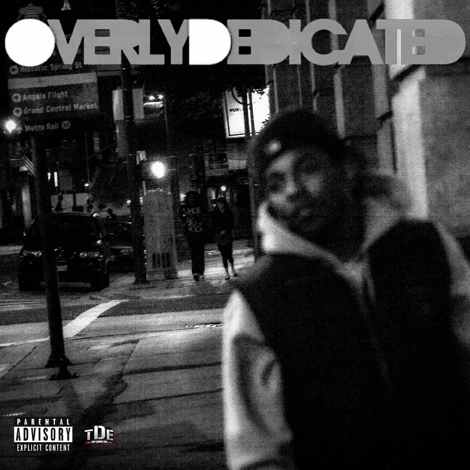
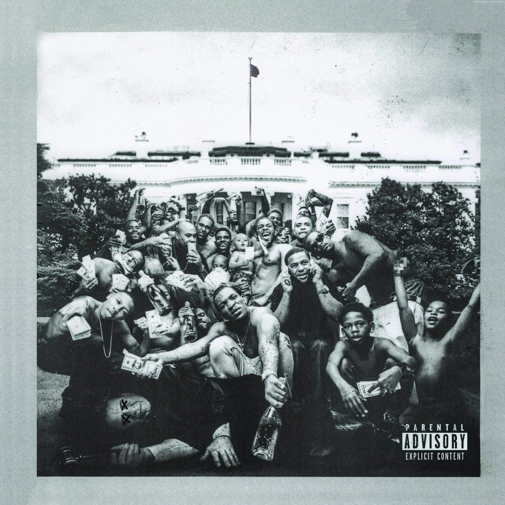
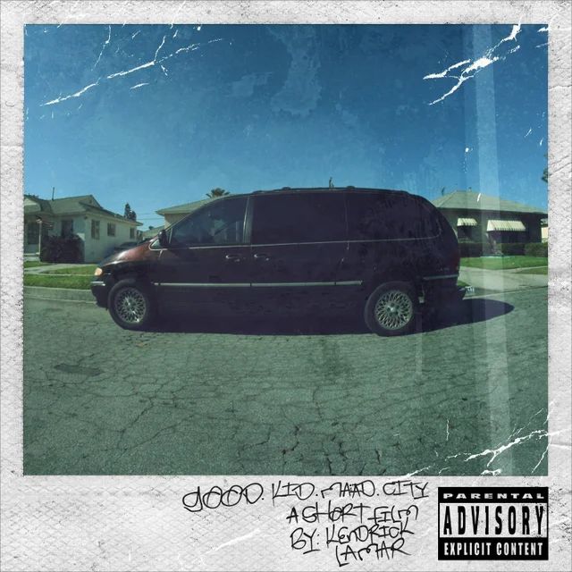
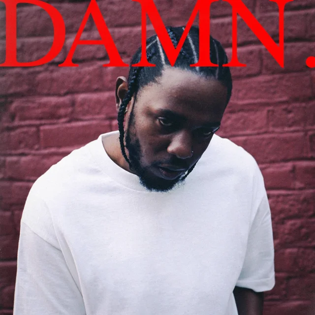
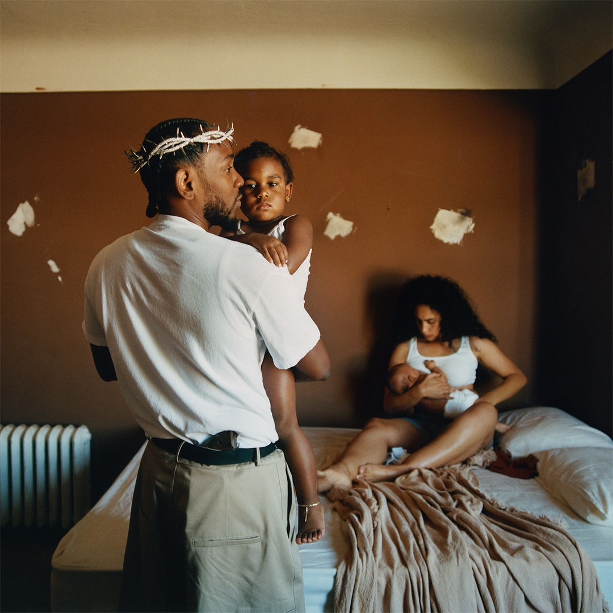

Quem é Kendrick Lamar?
Lamar é um rapper e compositor americano, nascido em 1987 na Califórnia. visto como um dos maiores rappers de todos os tempos e sempre aclamado por suas grandes obras como DAMN. e Mr Morale and The Big Steppers. Após o lançamento da mixtape Overly Dedicated em 2010 ele começou a ganhar reconhecimento. Logo no ano seguinte, Kendrick lança seu primeiro álbum independente: section.80 .

Overly Dedicated
Overly Dedicated é a quarta mixtape solo do rapper americano Kendrick Lamar, lançada em 14 de setembro de 2010, via Top Dawg Entertainment. O álbum conta com participações especiais de Dash Snow, Jhené Aiko, Schoolboy Q, Ab-Soul, Ash Riser, Dom Kennedy e Murs, entre outros.One of hip hop's most prominent current figures, Kendrick Lamar released this very good project. At the time, Kendrick really hadn't fully discovered his style, so he doesn't sound as energetic as he would later. Regardless of that, Kendrick Lamar made himself known as an interesting character. One with dope lyrics, and a unique delivery that distinguishes him from anyone else in hip hop. There are a few fantastic songs, such as "The Heart Pt. 2", which was evident that Kendrick had took a lot of time in writing this song. His emotion here makes this the best song easily. The beats on this album are pretty abstract, and they have a unique sound to them.
section.80
Kendrick Lamar is a weird kid, and rap music could always use more weird kids. The 24-year-old is a Compton native with a budding and mysterious Dr. Dre connection, but there's little-to-no link to his hometown's gangsta-funk legacy in his music. Instead, Lamar is very much a product of the late blog-rap era-- an introverted loner type who's willing to talk tough but is more interested in taking a Mag-Lite to his own personal failings and what he sees as the flaws of his generation. His rap style is fluid and melodic but approachable, and his frantic tumble of syllables evokes the feeling when you're high enough that your thoughts arrive fast and interrupt each other. If one of the Bone Thugs guys had a dorky, overly sincere younger cousin who was really into Afrobeat and Terrence Malick movies, it'd be Kendrick.

To Pimp A Butterfly
Kendrick Lamar’s major-label albums play out like Spike Lee films in miniature. In both artists’ worlds, the stakes are unbearably high, the characters’ motives are unclear, and morality is knotty, but there is a central force you can feel steering every moment. The "Good and Bad Hair" musical routine from Lee’s 1988 feature School Daze depicted black women grappling with colorism and exclusionary standards of American beauty. Mookie’s climactic window smash in 1989’s Do the Right Thing plunged its characters into fiery bedlam, quietly prophesying the coming L.A. riots in the process. In these moments, you could feel the director speaking to you directly through his characters and their trajectories. Lamar’s records, while crowded with conflicting ideas and arguing voices, have a similar sense of a guiding hand at work.
good kid,m.A.A.d city
The first sound we hear on good kid, m.A.A.d. city is a prayer: "Thank you, Lord Jesus, for saving us with your precious blood," voices murmur, evoking a family dinner gathering. The album's cover art, a grubby Polaroid, provides a visual prompt for the scene: Baby Kendrick dangles off an uncle's knee in front of a squat kitchen table displaying a 40-ounce and Lamar's baby bottle. The snapshot is such an unvarnished peek into the rapper's inner life that staring at it for too long feels almost invasive. This autobiographical intensity is the album's calling card. Listening to it feels like walking directly into Lamar's childhood home and, for the next hour, growing up alongside him.
DAMN.
Life is one funny motherfucker, it’s true. “DUCKWORTH.,” the last song on Kendrick Lamar's fourth studio album DAMN., tells a winding story about Anthony from Compton and Ducky from Chicago, whose paths cross first over KFC biscuits, and again, 20 years later, when Ducky’s son records a song about the encounter for Anthony’s record label. It’s a precious origin story, the stuff of rock docs and hood DVDs, and it’s delivered with such precision, vivid detail, and masterful pacing that it can’t possibly be true. But it’s a tale too strange to be fiction, and too powerful not to believe in—just like its author. Kendrick Lamar has proven he’s a master storyteller, but he’s been saving his best plot twist this whole time, waiting until he was ready, or able, to pull it off.
Mr Morale And The Big Steppers
Kendrick Lamar is a giddy dramatist. He loves to pack his music with perspectives, personifying his many characters and muses with distinct voices, cadences, and beat switches that bring them to life. Those virtuosic tics have made him one of rap’s most celebrated storytellers and stylists; he is the first and only rapper to have won a Pulitzer Prize. For some, Kendrick’s elastic narration and indignant dispatches on Black life have made him a figure of supreme moral authority in hip-hop—a role he spurns on his fifth studio album. Kendrick spends Mr. Morale & The Big Steppers gleefully immolating his cherished reputation, swinging between caustic taunts and plaintive confessions over slick funk and soul production that gleams like shards of a mirror. The double album offers rap’s most jarring heel turn since Future cut loose on Monster, taking an unfocused but probing look at Kendrick’s most elusive character: himself.
